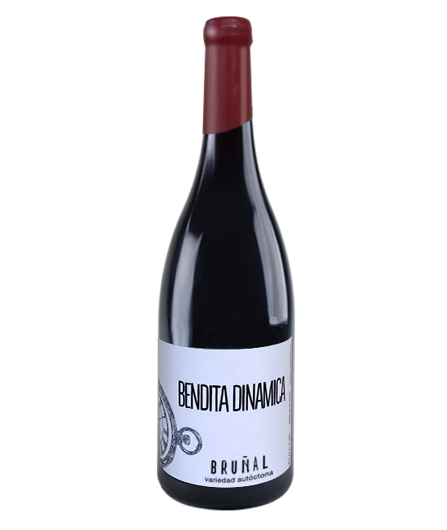
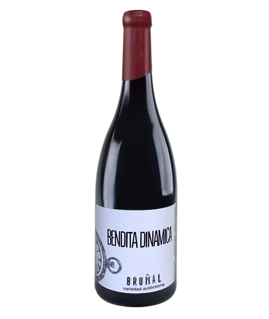

Arribes del Duero
Historia: La Denominación de Origen Arribes, reconocida oficialmente en 2007, se encuentra en el noroeste de la provincia de Zamora y parte de Salamanca, en una zona de abruptos cañones y microclimas únicos junto al río Duero. La tradición vinícola de esta región se remonta siglos atrás, ligada a pequeños viticultores que aprovecharon los terrenos escarpados para cultivar viñas de forma artesanal.
Tipos de Vino: Destacan los vinos tintos, elaborados principalmente con la uva Juan García, junto a otras variedades como Rufete o Tempranillo. También se producen blancos frescos y aromáticos con Malvasía y Verdejo, así como rosados de carácter ligero.
Uva Principal: La Juan García es la variedad autóctona más representativa, conocida por su adaptabilidad al terreno pedregoso y por aportar a los vinos un carácter rústico, con notas especiadas y buena estructura.
 
